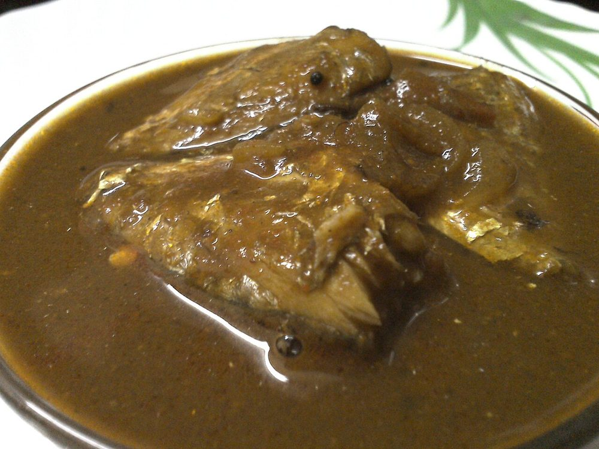

Milagu Kuzhambu
a dark, peppery tamarind gravy roasted from whole spices, the household cure-all

Contains: sesame, mustard
Ingredients
Quantities for 4.
- a lime-sized ball, soaked in 300ml hot water Tamarind
- 2 tbsp whole peppercorns Black Pepperthe whole point of the dish; do not reduce it
- 1 tbsp Toor Dalfor the roast, not for body
- 1 tbsp Chana Dal
- 1 tbsp Urad Dal
- 3 Dried Red Chilli
- 1.5 tsp Coriander Powderstirred into the roasted spices at the end
- 1/2 tsp Fenugreek Seeds
- 2 sprigs Curry Leaves
- 1 tsp Mustard Seeds
- 1/2 tsp Asafoetidause compounded-free hing to keep this gluten-free
- 1/2 tsp Turmeric
- 2 tsp, grated Jaggeryrounds off the tamarindoptional
- 5 tbsp Sesame Oilthe quantity is deliberate; this gravy is preserved by its oil
- to taste Salt
Cookware
stovetop, kadhai, blender
Checked against the ingredient list for ten allergens: milk, egg, fish, crustaceans, tree nuts, peanuts, sesame, mustard, soy and gluten. Brands vary, so read the label on anything new to you.
Before you start
- Soak the tamarind in hot water for 20 minutes, then squeeze it out and strain. Discard the fibres and seeds.
- Roast the spices on a genuinely low flame. This is the step the whole dish rests on and it cannot be hurried.
- Milagu kuzhambu tastes better the day after it is made. Consider cooking it a day ahead.
Method
- Dry roast the peppercorns, the three dals, the red chillies and fenugreek seeds in a kadhai over low heat for 6 to 8 minutes until the dals are reddish gold and the pepper smells sharp.If the fenugreek darkens past honey brown the whole pot turns bitter. It is the first thing to burn.
- Turn off the heat, stir in the coriander powder and one sprig of curry leaves, and let the residual heat toast them for 30 seconds.
- Cool completely, then grind to a fine powder in a dry blender.Grind only when cold. Warm spices smear into a paste in the jar.
- Heat the sesame oil in the same kadhai and crackle the mustard seeds, then add the remaining curry leaves and the asafoetida.
- Pour in the strained tamarind water with the turmeric and salt and bring to a rolling boil.
- Boil hard, uncovered, for 8 minutes to cook out the raw edge of the tamarind.
- Whisk the ground spice powder with 60ml water to a slurry and stir it in.Making a slurry first stops the powder from seizing into lumps in the hot liquid.
- Simmer 10 to 12 minutes over low heat until the gravy thickens and the oil separates and floats in a dark ring on top.The floating oil is the finish line. Take it off any earlier and it will not keep.
- Stir in the jaggery, cook 2 minutes more and take off the heat.
- Serve a spoonful over hot rice with a poriyal and a papad.
Storage
Because of the oil and tamarind this keeps 10 days refrigerated in a glass jar, and improves for the first three. Always spoon it out with a dry spoon. Reheat only the portion you need.
Nutrition Medium estimate
Low protein: 3 g a serving, 6% of the calories
| Per serving42 g | Per 100 g | |
|---|---|---|
| Calories | 236 kcal | 565 kcal |
| Protein | 3.3 g | 8 g |
| Carbohydrate | 14.4 g | 34 g |
| of which sugars | 2.6 g | 6 g |
| Fibre | 4.0 g | 10 g |
| Fat | 19.6 g | 47 g |
| of which saturated | 2.8 g | 7 g |
| of which unsaturated | 15.9 g | 38 g |
Ingredients given to taste count as zero, so the real figures run a little higher. Nearest database match used for asafoetida, curry leaves, jaggery, urad dal. Estimated from raw ingredients using USDA FoodData Central.
More like this: Healthy Indian recipes · Vegan Indian recipes · Vegetarian Indian recipes · Gluten-free Indian recipes · Dairy-free Indian recipes · No onion no garlic recipes · Tamil Nadu recipes
Times, yields, allergens and nutrition are guidance. Use your own judgement on doneness and on storing. More in About.